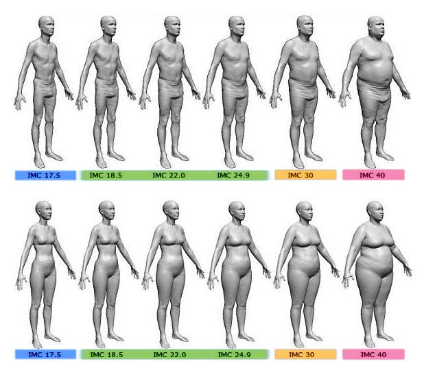

Grados de obesidad
medication Requiere diagnóstico medicoGrados de obesidad
Para determinar si una persona se encuentra o no, en su peso ideal se creó un sistema en él cual dependiendo de tu altura y peso, se puede saber si estas en los niveles adecuados
IMC = peso/estatura² , medida en Kg/m².
- Bajo peso: IMC < 18,5 kg/m2.
- Normopeso: IMC 18,5 - 24,9 kg/m2.
- Sobrepeso: IMC 25 -29 kg/m2.
- Obesidad grado 1: IMC 30-34 kg/m2.
- Obesidad grado 2: IMC 35-39.9 kg/m2.
- Obesidad grado 3 u obesidad mórbida: IMC 40-49,9 kg/m2.
- Obesidad grado 4 u obesidad extrema: IMC > 50 kg/m2.
Gracias a estas medidas podemos determinar si un individuo se encuentra en su peso ideal o está entrando en la obesidad y corregirlo a tiempo con hábitos saludables antes de que entren problemas graves en su vida.
